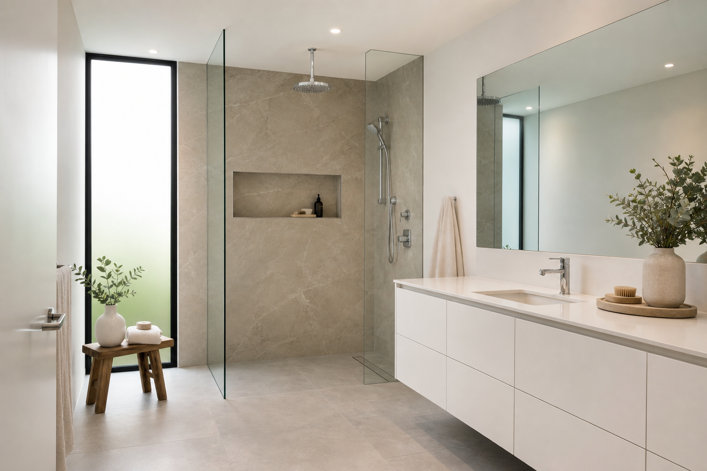

Curbless Walk-In Shower Design Guide (Barrier-Free Basics)
A curbless walk in shower is one of the strongest “spa bathroom†signals in modern remodeling because it removes the visual barrier of a threshold. It can also support accessibility goals. It is also a project where details matter: drainage, waterproofing, and enclosure planning should be treated as one system—not three separate decisions. Curbless shower contractors can help you sequence waterproofing, slope, and glass as one plan.
What “curbless†means (and what it does not)
Curbless usually describes a shower entry without a raised dam. It does not automatically mean “no enclosure†or “no waterproofing discipline.†Many beautiful designs still use glass panels or strategic partial walls.
It also does not guarantee “wheelchair turning space†by itself. Clearances, grab bar backing, valve reach, and bench design work together if accessibility is a goal.
Drainage and slope: the core engineering
The shower floor must direct water reliably toward the drain. With large-format tile or seamless-looking surfaces, experienced bathroom installers matter even more because mistakes show up faster.
Linear drains are popular in modern spa bathrooms because they can align with a clean sightline, but the correct choice depends on your layout and product selection.
Discuss how the shower floor meets the bathroom floor. A subtle slope in the dry zone can help water find the drain after splashing, but it must be comfortable to stand on and compatible with large-format tile layouts.
Waterproofing priorities in zero-entry showers
Think in terms of “water management,†not just aesthetics. Transitions between wet and dry zones, penetrations for fixtures, and niche detailing are common risk points if rushed.
Some assemblies call for flood testing before tile. Treat that as non-negotiable when your contractor recommends it—finding a leak before finishes is dramatically cheaper than after.
Glass layout and splash control
Curbless entries can feel amazing, but you still need a realistic plan for spray. A fixed panel can preserve openness while improving containment, depending on the showerhead package you choose.
Handhelds on a slide bar often reduce “escape velocity†spray compared with a ceiling rain head aimed toward the opening. Mock-ups and in-showroom testing beat guessing from product photos.
Where curbless designs affect budget
Costs often increase when structural work, drain relocation, or extensive waterproofing updates are required. That is not a reason to avoid curbless—it is a reason to plan early, get bathroom remodel estimates that spell out those risks, and avoid mid-project surprises.
Ask bids to separate “if everything is perfect†from “if we open the floor and find X.†Older homes often hide the expensive part in that second category.
Subfloor, joists, and when you need a build-up
Lowering a floor to gain slope without a curb is not always possible. Sometimes the assembly needs to be built up instead, which can affect transitions to hall flooring and door undercuts.
Your bathroom remodeling contractor should measure total thickness of tile, mortar, membrane, and any decoupling layers before promising a flush entry.
Radiant heat, benches, and comfort details
Curbless showers often go hand in hand with heated floors because the room feels more spa-like and the dry zone stays comfortable. If you add heat, confirm how the wire or hydronic loop avoids penetrations that compromise waterproofing.
Benches should shed water, not pool it. Slight pitch, solid blocking, and correct waterproofing at bench legs prevent the slow leaks that show up as stains on the ceiling below.
Accessibility beyond the threshold
Zero entry helps, but also evaluate doorway width into the bath, turning space, grab bar locations, and whether controls are reachable from outside the spray. Blocking for future bars costs little during framing.
Contrast helps vision: a dark drain channel against lighter tile, or a change in texture at the shower edge, can prevent missteps without looking clinical.
Inspections, flood tests, and realistic timelines
Curbless work often touches structural, plumbing, and tile scopes in tight sequence. Permit inspections and dry-in milestones can add days that are still cheaper than rework.
Communicate move-out or single-bath constraints early. A rushed flood test or skipped cure time is a common source of long-term problems.
FAQ
Is a curbless shower the same as a wet room?
Not necessarily. Curbless describes the entry; wet room implies broader waterproofing strategies.
Do curbless showers always need a linear drain?
No. The right drain depends on slope planning and layout.
Will a curbless shower make the whole bathroom wet?
Not if slope, drain capacity, and enclosure planning are correct. Poor showerhead aim and weak ventilation cause more “whole room wet†complaints than the lack of a curb alone.
Can you do curbless on a second floor?
Often yes, but structure and noise transmission matter. Discuss deflection limits, decoupling, and what sits below the bathroom before finalizing tile size.